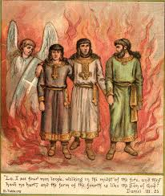

الفتية الثلاثة في اتون النار
الثلاثة فتية هم رفقاء دانيال النبي الذين أتوا بأمر نبوخذنصر الملك إلى بابل (سبي من أورشليم)، وكانوا من بني يهوذا (سفر دانيال 1: 6). ورُشِّحوا هم الأربعة للخدمة في القصر الملكي (دا 1: 1-4؛ ار 25: 1) فغير رئيس الخصيان أسمائهم.. وأصبح اسم دانيال هو بلطشاصر. وأبى هؤلاء الأربعة أن يأكلوا من طعام الملك وأن يشربوا من خمره واختاروا القطاني والماء. ومع بساطة هذا المأكل والمشرب فإن مناظرهم ظهرت أحسن من بقية الفتيان الذين تناولوا من أطايب الملك وخمره. والقصة كاملة مذكورة في سفر دانيال
وقد رفضوا الأكل من أكل الملك مثل باقي الفتيان (دا 1: 12), ورفضوا السجود لتمثال الملك نبوخذنصر المصنوع من ذهب (دا 3: 12) فطرحهم الملك في أتون النار ولكن الله أنقذهم منه (دا 3: 19 - 30).
ويوجد التسبحة الرائعة التي سبَّحوا الله بها وهم في أتون النار، وموجود في تتمة سفر دانيال في الأسفار القانونية الثانية، وتقوم الكنيسة القبطية في صلاة التسبحة بصلاة هذه الصلاة في الهوس الثالث، وكذلك توجد إبصالية واطس للثلاثة فتيه القديسين بعنوان أريبسالين أو رتلوا للذي صُلِبَ `Ari'alin
وهذه قائمة بأسمائهم الأولى والجديدة ومعانيها، مع روابط من موقع الأنبا تكلا للمزيد عن كل منهم
حننيا ← شدرخ (معناها الأمير من أكو، إله القمر)
ميشائيل (أي: مَنْ كالله؟) ← ميشخ
عزريا ← عبدنغو (أي: عبد الإله نبو)
و تختم هذى القصة بهذة الصلاة و نقول
اللهم اجعلنا مستحقين أن نقول بشكر:
أبانا الذي في السماوات،
ليتقدس اسمك.
ليأت ملكوتك.
لتكن مشيئتك،
كما في السماء،
كذلك على الأرض.
خبزنا كفافنا،
واغفر لنا خطايانا،
كما نحن نغفر
لمن يخطئون إلينا.
ولا تدخلنا في تجربة،
بل نجنا من الشرير،
لأن لك الملك والقوة والمجد،
إلى الأبد، آمين.
فلنشكر صانع الخيرات الرحوم الله، أبا ربنا وإلهنا ومخلصنا يسوع المسيح. لأنه سترنا وأعاننا، وحفظنا، وقبلنا إليه، وأشفق علينا، وعضدنا، وأتى بنا إلى هذه الساعة. هو أيضًا فلنسأله أن يحفظنا في هذا اليوم المقدس وكل أيام حياتنا بكل سلام، الضابط الكل الرب إلهنا.
أيها السيد الرب الإله ضابط الكل أبو ربنا وإلهنا ومخلصنا يسوع المسيح، نشكرك على كل حال، ومن أجل كل حال، وفى كل حال، لأنك سترتنا وأعنتنا وحفظتنا وقبلتنا إليك، وأشفقت علينا وعضدتنا وأتيت بنا إلى هذه الساعة. من أجل هذا نسأل ونطلب من صلاحك يا محب البشر، امنحنا أن نكمل هذا اليوم المقدس وكل أيام حياتنا بكل سلام مع خوفك. كل حسد وكل تجربة وكل فعل الشيطان ومؤامرة الناس الأشرار، وقيام الأعداء الخفيين والظاهرين، انزعها عنا وعن سائر شعبك وعن موضعك المقدس هذا.
أما الصالحات والنافعات فارزقنا إياها، لأنك أنت الذي أعطيتنا السلطان أن ندوس الحيات والعقارب وكل قوة العدو ولا تدخلنا في تجربة، لكن نجنا من الشرير. بالنعمة والرأفات ومحبة البشر، اللواتي لابنك الوحيد ربنا وإلهنا ومخلصنا يسوع المسيح. هذا الذي من قبله المجد والإكرام والعزة والسجود تليق بك معه ومع الروح القدس المحيى المساوي لك الآن وكل أوان وإلى دهر الدهور.
آمين.